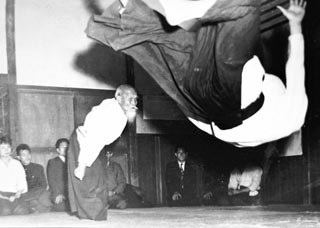

私は読書が好きでした。今までたくさんの小説を読んできましたがどれもとても面白い作品でした。その中でも上の画像の「オーバーロード」という小説がとても面白いです現在14巻出ていますが、まだ継続しています。是非見ることをおすすめします。

上の画像に写る老人は植芝盛平という方で合気道の創始者です。私は小学生の頃に合気道と出会い、技を磨いてきました。皆さんのほとんどが合気道がどういうものか正確には分からないでしょう。合気道は言葉で説明するのは難しいですが同じ技でも毎日毎日で違う技に感じるほど奥が深く魅力的な武道です。合気道も是非おすすめします。